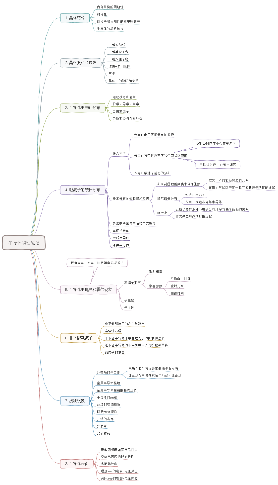
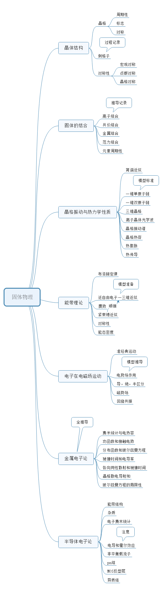

| 半导体器件 | |
目录： 第一节--半导体基础 第二节--二极管 第三节--晶体管 第四节--MOS电容 第五节--MOS管 第六节--纳米器件 第七节--结型场效应管 返回页： |
半导体物理基础知识介绍： 一--晶体结构 晶体结构就不用多说，学过固体物理和半导体物理的基本上都知道。主体的理论就是晶格及晶格常数构建的单晶模型兴趣的可以去学习固体物理中地细节知识。这部分主要是给学习半导体时有一个具体的印象，与后面的学习的内容关系不大。只是方便构建直观的物理模型。 二--能带理论 能带图的理论推导相当的复杂，需要学习量子力学后在学习固体物理才能够完全的推导。但好在结论是简单的。个人理解的能带图就是电子分布图，结合了统计分布和能量密度。能带图所展现的就是电子的能量的大小。通过电子能量的大小的显示，描述电子的分布。根据电子分布与外部作用的关系，可以有效地推出外部作用的性质，进而反推内部的作用机制。具体的使用方法在实际的半导体模型中使用，现在需要建立的关联就是知道能带图就知道电子的分布。根据半导体中的电子空穴的对应关系就可以了解载流子的分布。 三--载流子统计 载流子统计说白了就是载流子的位置。之所以使用统计是测不了实际的位置，只能使用概率学的方法来表示，但形式上是等价的。具体的物理量在以后出现后再说明，目前需要了解的是费米分布和玻尔兹曼分布。后者是前者的简化。这两种分布区分了简并与非简并半导体。这会影响半导体能带的表示，所以需要区别对待。至于其他的物理量基本上只有专门研究半导体物理的人才要考虑。如果只是想在器件上做文章，这些物理量基本上都会给出来。当然，使用新型材料的拓荒者不在其内。 四--载流子输运 主要是载流子的运动特性，用于计算电流和电压之间的关系。这部分的模型针对的是载流子的平衡态的分析。主要的方法就是推导和近似。这也是半导体器件中最难的部分，至少在我看来是这样的。这里也不给出具体的介绍了。具体的分析在实际的器件中会更有效，单纯的使用简单的模型描述也是比较困难的，物理量不好对应。 五--半导体常用方程 前面的几个其实就是为最后的几个方程做准备的。半导体器件的大量的推导都始于接下来的三个方程，这可谓是一切的起点。 1、泊松方程 2、电流连续性方程 J=qDn▽N-qDp▽P+qμnNEe+qμpPEe 3、电流连续性方程中电子部分 dn/dt=Dn*d²N/dx²+μnEedN/dx+μnNdEe/dx-△N/τn (说明：d在这里指的是偏导，由于输不了偏导的符号，只能用求导的符号代替 ,以后可能会使用图片或者其他的公式输入的代替） 简单的介绍一下这三个方程。 第一个不用多说，著名的物理方程，学过大学物理基本上都知道。这里将其特地的提出来是由于半导体材料的特殊性。半导体中由于晶格的存在往往具有高度的对称性，而泊松方程可以利用这种性质简化计算。这个方程主要是将电荷分布和电位分布联系起来，也就是将电压与电荷对应。 第二个是说明电荷与电流的关系，根据这个方程可以导出平衡态下的电流和电荷的关系。再结合前面的方程就可以看出电流电压关系。而评价一个器件的性能的主要指标就是电流电压关系。这就是半导体器件的一半的工作任务。 第三个则是针对时态模型的，主要用于小信号的推导。这便是半导体器件的另一半的任务。所以，这三个方程是半导体器件所有的公式推导的原点。其他的物理模型都是基于这个公式推导验证的。总之，学习半导体物理一定要记住这三个方程，就像学习经典力学一定要知道牛顿三定律一样。 最后插入半导体物理和固体物理的知识结构图供有兴趣的人参考。   |